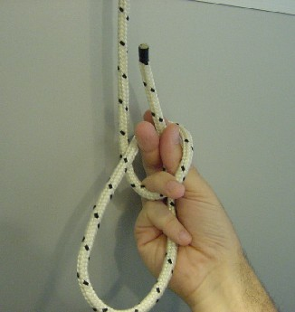
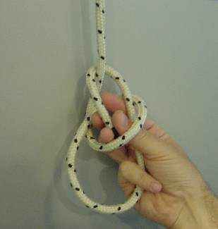
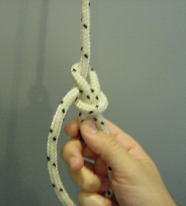
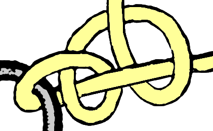
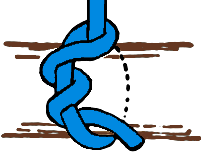
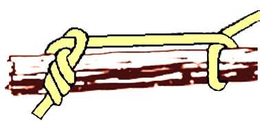

Los nudos más útiles (1º parte)
Rizo Plano
Está compuestos de dos medios nudos, uno sobre el otro pero en sentidos contrarios.
Se emplea en vendajes, por ser plano y no generar molestias. También es uno de los nudos más usado para unir cuerdas de igual grosor o mena.
No se recomienda para unir cuerdas mojadas o que vayan a recibir demasiada tensión, ya que luego es difícil de desatar.
Vuelta Escota, Nudo de Escota o Nudo de Tejedor
Sirve especialmente para atar cuerdas de distintos grosores o mena.
Por ejemplo, al izar una bandera que tenga una gaza de cabo a la que hay que atar la driza, se puede aplicar este nudo perfectamente.
Es fácil de deshacer, rápido de hacer y seguro. La gran ventaja que tiene es que puede realizarse con cabos o cuerdas poco grosor, ya que por mucho que se apriete siempre podrá desanudarse con mucha facilidad.
As de Guía
Es probablemente uno de los nudos más usados, tanto en montañismo como en náutica. Tiene todas las cualidades de un buen nudo, es seguro, fácil de hacer y deshacer, aunque se haya sometido a mucha tensión.
Es usado comúnmente para hacer lazos NO corredizos, como parte de otros nudos y para soportar cargas.
También se usa para amarrar animales, ya que al no cerrarse no los estrangula.
Cómo este el As de Guía es un nudo de salvamento es muy importante aprendas a hacerlo con una mano, alrededor de tu cintura y con los ojos cerrados.
El primer paso es hacer pasar la cuerda por la cintura, después pon el dorso de la mano sobre la cuerda, con los dedos índice, pulgar y medio al frente, jira la muñeca haciendo una Gaza; con los dedos medio e índice rodea la cuerda y asegura el nudo con el índice y pulgar, tal cómo se muestra en las fotos.
  
Ballestrinque o Vuelta de Ballestrinque
Es un nudo de fácil ejecución muy utilizado en las embarcaciones. Tiene buen aguante; pero no es totalmente seguro, por eso es recomendable reforzarlo con un par de cotes.
Al finalizar el nudo es bueno dejar una cierta longitud de margen al extremo libre de la cuerda, ya que puede escurrirse o rodarse algo.
Es ideal para sujetar cuerda a objetos cilíndricos, también es utilizado para el inicio de amarres.
Cote Simple
Este es un nudo muy sencillo, cuyas dos extremidades salen en la misma dirección, por lo que se aguanta sobre si mismo.
Un cote por sí solo no sirve para amarrar; por eso siempre se termina con una ligada o bien haciendo otro cote a continuación.
Es un nudo que se aprende enseguida y que constituye la base para otros nudos más complejos.
Así por ejemplo para afirmar un cabo o cuerda a un objeto, se puede dar una vuelta sobre el objeto, tal como se observa en la última figura.
Usualmente es el primer nudo que aprendemos en la vida, pues inicia el nudo para los zapatos.
Otra utilidad es rematar las puntas de las cuerdas para evitar que se deshilachen.

Cote Doble
Similar al “Cote”, es simplemente un refuerzo del mismo.
Resulta muy útil para sujetar una cuerda al ojal en el extremo de una carpa, a una estaca, una argolla, etc.
Si las cuerdas son de diámetros pequeños, es muy difícil desatarlo. Si la cuerda tiene un diámetro mediano, puede desatarse con los movimientos de la misma.

Leñador, Vuelta de Braza o Nudo de Estribo
p>Su nombre proviene del uso que le daban los leñadores para arrastrar los troncos por el suelo. Es un nudo de amarre provisional que lo usaremos para amarrar cualquier objeto, cómo por ejemplo troncos, paquetes, tablones o objetos que deseemos transportar.También es muy empleado en el comienzo de los amarres

Arrastre
Es una variación o mejora del nudo “Leñador”, para asegurar un tronco o similar a la hora de arrastrarlo, de manera que no se suelte en el camino.